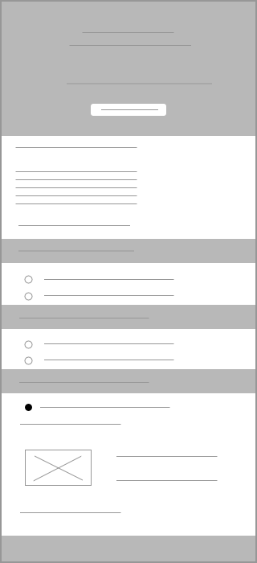
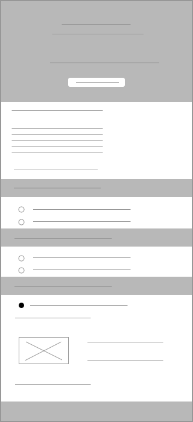

Interviews
Based on my experiences I realized there was more potential to the website and decided to refactor it. I began my journey by doing some basic research about what the intent of this website is and what it needs or is trying to showcase. At the discovery phase of my project, I conducted user interviews in order to get a better understanding of the problem.
Guiding Questions:
- What are the most attractive elements on a website? What appeals to a user?
- I interviewed about 30-35 users asking them for what features they look for when shopping online.
- I understood that shipping, delivery and 3rd party verification for security are top concerns.
- Users had to believe the legitimacy of the site.
- They looked for product reviews and images of reviewed items.
What I tried to solve:
My aim was to enable security for the application to enhance user trust. I planned to provide in depth details about shipping, delivery and package tracking. I also aimed to ensure user information security and in-grain more interactivity and make the application more usable.
My designs under test:
I devised an initial version for the user journey of the checkout page and tested it with a sketch sample to get more user feedback. I designed a checkout page with a "trusted verification source mark" and examined the reactions of users who initially were hesitant to checkout because of the lack of trust.
 

Test Conclusions:
After testing out the designs I had them tested by a group of already application using members as well as new members. A large amount of users said they found the application trustworthy and would checkout the itemns without a doubt. They had no fear of giving out their card details since the application was verified and seemed legitimate.